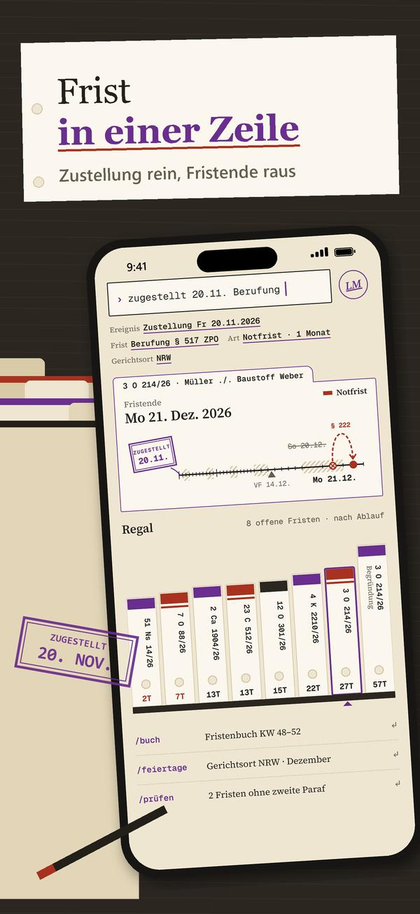
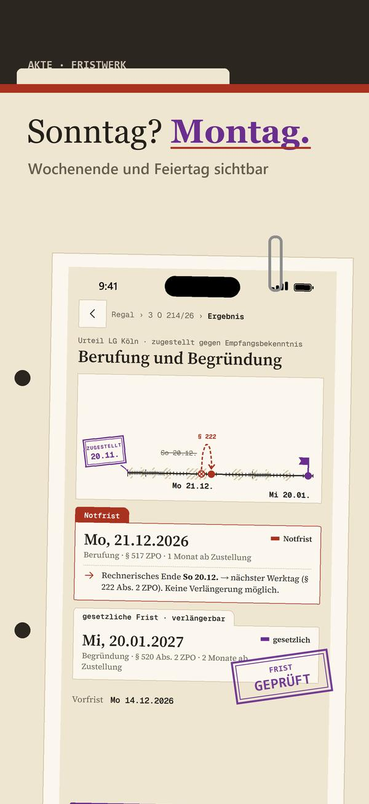
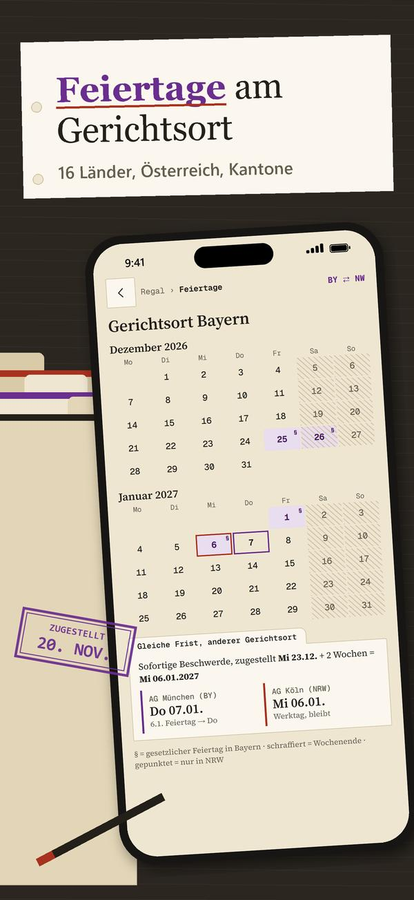

Fristwerk – Fristenrechner
Fristberechnung mit Feiertagen
Fristwerk berechnet gesetzliche Fristen für Kanzleien, Rechtsabteilungen und Referendare in Deutschland, Österreich und der Schweiz. Sie tippen eine Zeile wie „zugestellt 20.11. Berufung“ und sehen sofort das Fristende – mit Wochenenden und Feiertagen am Gerichtsort, mit Vorfrist und mit jedem Rechenschritt samt Paragraf. Offene Fristen stehen als Aktenrücken im Regal: je kürzer der Rücken, desto näher das Ende.



- Fristberechnung per Befehlszeile: Ereignis, Fristart, Gerichtsort
- Wochenende und Feiertag am Gerichtsort: Verschiebung auf den nächsten Werktag, sichtbar im Zeitstrahl
- Rechenweg mit Paragrafen zu jeder Frist, zum Nachprüfen und Ablegen
- Feiertage aller 16 Bundesländer, Österreichs und der Kantone, ohne Internet
- Notfristen deutlich markiert, Vorfrist frei wählbar
- Fristenbuch nach Kalenderwochen mit Paraf-Spalte
- Vier-Augen-Kontrolle mit Kürzeln von ReFa und Anwalt
- Kanzlei teilen über iCloud, Mitteilungen zur Vorfrist, PDF und CSV
Im App Store ladenHilfe · Datenschutz